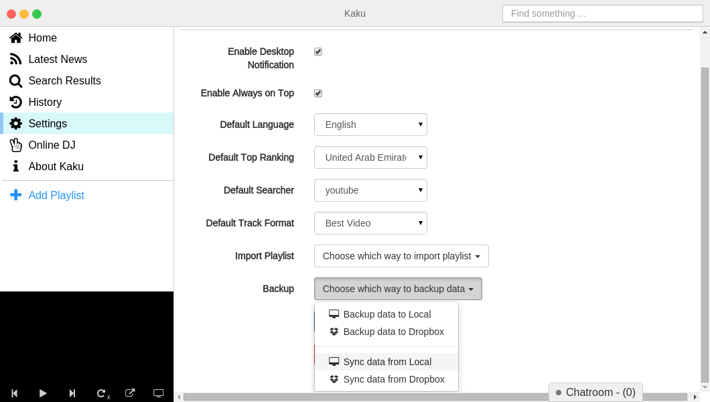
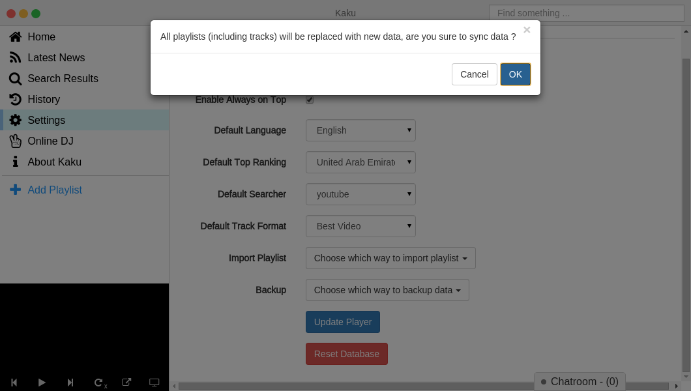
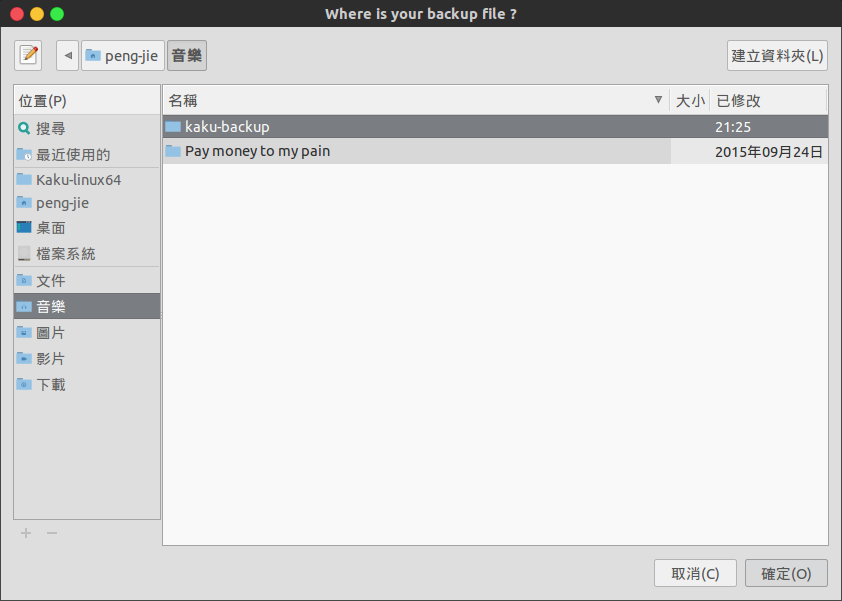
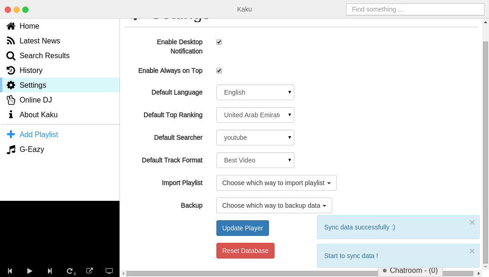

Sync data from Dropbox and you can see Dropbox API Request Authorization.Don't Worry！we will not save your any information.

If you not have backup your playlist, you can reference How to back up music.
Open Kaku and checkout to Setting -> Backup -> Sync data from Local / Dropbox,
and choose your previous backup method.
Choose Sync data from Local.

Kaku will have notification, if you don't want to replace your playlist click Chancel otherwise click OK.

Choose your save path and import it.

Done！

Choose Sync data from Dropbox and you can see Dropbox API Request Authorization.
Don't Worry！we will not save your any information.
You can see authorization request, click permission and will sync your playlist.
Done！